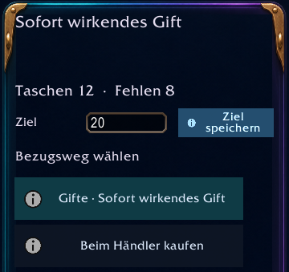
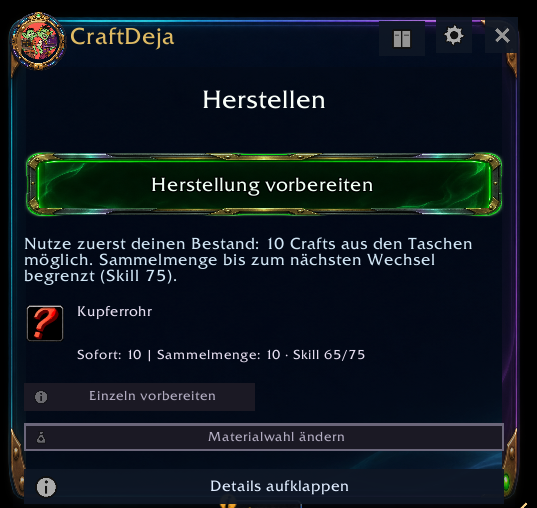

Put your professions on the workbench
CraftDeja is a goblin workshop for World of Warcraft: Forever. Plan your profession leveling with available auction house prices, find known recipe sources and see what to gather or craft next.

What’s on the workbench?
- Route board. Choose a skill target and review the recipe changes, materials and estimated costs. Check known trainers or vendors when a recipe is missing.
- Supply shelf. Set targets for learned or eligible vendor consumables. For example, a target of 20 with 12 on hand leaves 8 to make or buy.
- Field guide. Keep the compact panel visible while you shop, pick up mail, visit suppliers or prepare a batch. The main action follows the order.
A shift in the workshop
Open Engineering and plan a target. When Copper Tube comes up, review Copper Bars and Weak Flux, use the suggested sources and meet the anvil requirement. Prepare the batch in CraftDeja, then start it from Engineering. For routine supplies, open Stock Targets and select an eligible item. Choose a target and review what is still missing.
WoWLua simulation · German interface


Installation and requirements
Beta channel: Stock Targets in this description are available in 3.9.0-beta.26. Select that build from Files or enable beta updates in the app.
Install CraftDeja for World of Warcraft: Forever 1.60.1 through the CurseForge app for that installation. For a manual installation, extract the CraftDeja folder into the Forever client's Interface/AddOns directory and enable it from the character selection screen. The addon UI supports English and German.
Auctionator is optional and supports the shopping-list handoff and price lookup. TradeSkillMaster is optional and can supply a stored market price. CraftDeja can also use known vendor prices. Check current offers before buying.
Start in game
- Open a supported profession and choose a skill target in the workshop.
- Review the route and its estimated costs, then follow the compact guide.
- Use
/cdjfor the guide,/cdj dashboardfor the workshop and/cdj stockfor stock targets.
FAQ
Which professions are supported? Alchemy, Blacksmithing, Cooking, Enchanting, Engineering, First Aid, Leatherworking, Tailoring and Mining recipes such as smelting. Poisons is available to rogues who have unlocked it in the client.
Will it purchase or craft for me? You confirm your purchases and trainer actions. You collect mail and move bank items as instructed. CraftDeja can prepare a batch and you start it with the game's original crafting button.
Can I rely on the price and route estimates? Prices and skill-up chances can change. Unknown prices remain unknown. Review the final offer and use the route as a planning estimate.
Why is a learned recipe missing from Stock Targets? Open that profession on the current character so CraftDeja can read its recipe list. Eligible vendor items can also be selected through the vendor view.
Help and bug reports
Use CraftDeja’s GitHub issue tracker for questions and bug reports. Include the addon and client versions, language, profession, skill and target, the last action you took, and what you expected to happen. Run /cdj log and include the relevant diagnostic output. Crop or redact unrelated chat and character details.